Discusses how to smooth and to fill missing values in EBSD data
| On this page ... |
| Smoothing a single grains |
| The Mean Filter |
| The Median Filter |
| The Smoothing Spline Filter |
| The halfquadratic Filter |
| Interpolating Missing Data |
| A synthetic example |
| A real world example |
Lets start out analysis by considering a single magnesium grain
% import standard data set mtexdata twins % compute grains [grains,ebsd.grainId,ebsd.mis2mean] = calcGrains(ebsd,'angle',10*degree); % restrict data to one single grain [~,id] = max(grains.area); oneGrain = grains(id); ebsd = ebsd(oneGrain); plot(ebsd,ebsd.orientations) hold on plot(oneGrain.boundary,'micronbar','off') hold off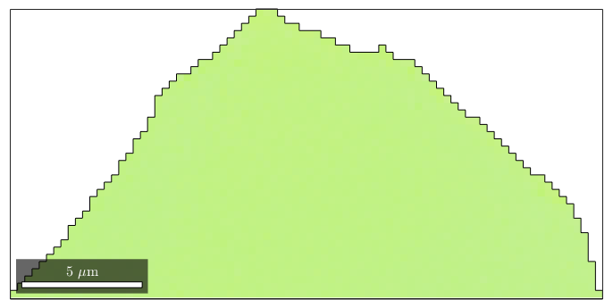
With the default colormap we can not distinguish any orientation gradient within the grain. Lets adapt the colormap to this specific grain
oM = ipdfHSVOrientationMapping(ebsd); % set inversePoleFigureDirection such that the mean orientation is % colorized white oM.inversePoleFigureDirection = grains(id).meanOrientation * oM.whiteCenter; % concentrate the colors around the mean orientation oM.maxAngle = 3*degree; % plot the colormap plot(oM,'resolution',0.5*degree)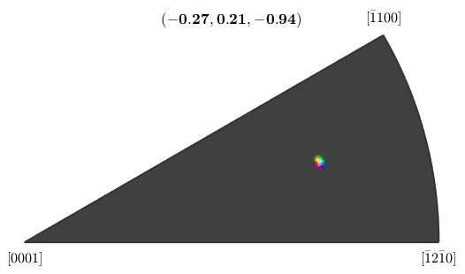
With the new colormap we can clearly see the noise overlapping the texture gradient within the grain.
% plot the grain plot(ebsd,oM.orientation2color(ebsd.orientations)) hold on plot(oneGrain.boundary,'micronbar','off') hold off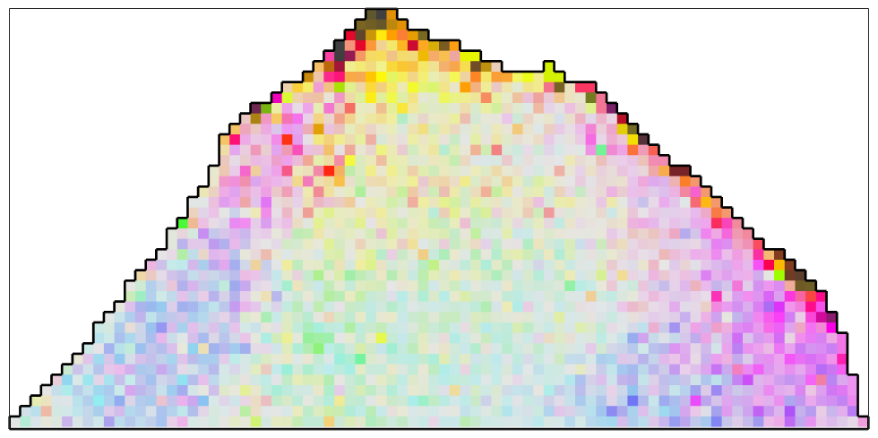
The most simplest filter to apply to the orientation data is the meanFilter which simple takes the mean of all orientations within a certain neighbourhood.
% define the meanFilter F = meanFilter; % smooth the data ebsd_smoothed = smooth(ebsd,F); % plot the smoothed data plot(ebsd_smoothed('indexed'),... oM.orientation2color(ebsd_smoothed('indexed').orientations)) hold on plot(oneGrain.boundary,'micronbar','off') hold off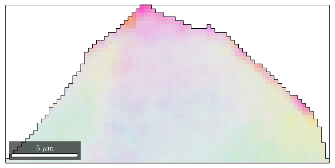
As an additional option one can specify the size of the neighbourhood and weights for the averaging. Lets define a 5x5 window with weights comming from the Gaussian distribution.
[x,y] = meshgrid(-2:2); F.weights = exp(-(x.^2+y.^2)/10); % smooth the data ebsd_smoothed = smooth(ebsd,F) % plot the smoothed data plot(ebsd_smoothed('indexed'),... oM.orientation2color(ebsd_smoothed('indexed').orientations)) hold on plot(oneGrain.boundary,'micronbar','off') hold off
ebsd_smoothed = EBSD
Phase Orientations Mineral Color Symmetry Crystal reference frame
1 2016 (100%) Magnesium light blue 6/mmm X||a*, Y||b, Z||c
Properties: bands, bc, bs, error, mad, x, y, grainId, mis2mean
Scan unit : um
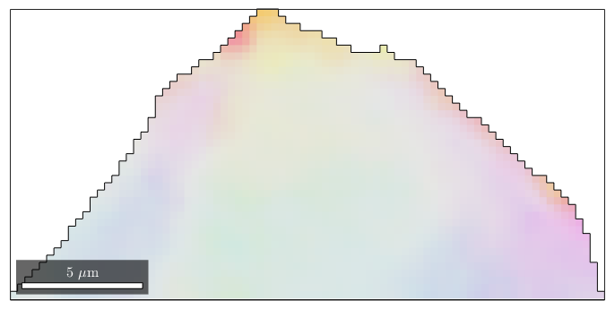
The disadvantage of the mean filter is that is smoothes away all subgrain boundaries and is quite sensitiv agains outliers. A more robust filter which also preserves subgrain boundaries is the median filter
F = medianFilter; % define the size of the window to be used for finding the median F.numNeighbours = 3; % this corresponds to a 7x7 window % smooth the data ebsd_smoothed = smooth(ebsd,F); % plot the smoothed data plot(ebsd_smoothed('indexed'),... oM.orientation2color(ebsd_smoothed('indexed').orientations)) hold on plot(oneGrain.boundary,'micronbar','off') hold off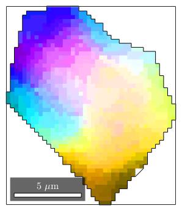
The smoothing spline filter is up to now the only filter that automatically callibrates the smoothing paramter
F = splineFilter; % smooth the data ebsd_smoothed = smooth(ebsd,F); % plot the smoothed data plot(ebsd_smoothed('indexed'),... oM.orientation2color(ebsd_smoothed('indexed').orientations)) hold on plot(oneGrain.boundary,'micronbar','off') hold off % the smoothing parameter determined during smoothing is F.alpha
ans =
4.6123
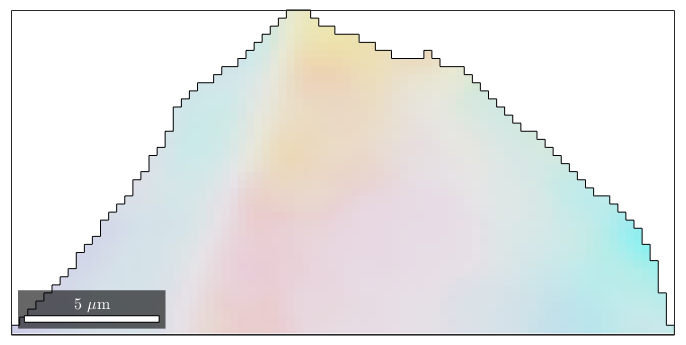
The halfquadratic filter differs from the smoothing spline filter by the fact that it better preserves inner grain boundaries. We will see this at a later example.
F = halfQuadraticFilter; F.alpha = 1; %set the smoothing parameter % smooth the data ebsd_smoothed = smooth(ebsd,F); % plot the smoothed data plot(ebsd_smoothed('indexed'),... oM.orientation2color(ebsd_smoothed('indexed').orientations)) hold on plot(oneGrain.boundary,'micronbar','off') hold off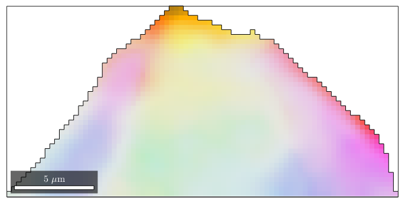
The filters above can also be used to interpolate missindexed orientations.
In the following example we randomly set 50 percent of the measured orientations to nan.
ebsdNaN = ebsd; % set 50 percent of the orientations to nan ind = discretesample(length(ebsd),round(length(ebsd)*50/100)); ebsdNaN(ind).orientations = orientation(nanquaternion,ebsd.CS); % plot the reduced data plot(ebsdNaN,oM.orientation2color(ebsdNaN.orientations)) hold on plot(oneGrain.boundary,'micronbar','off') hold off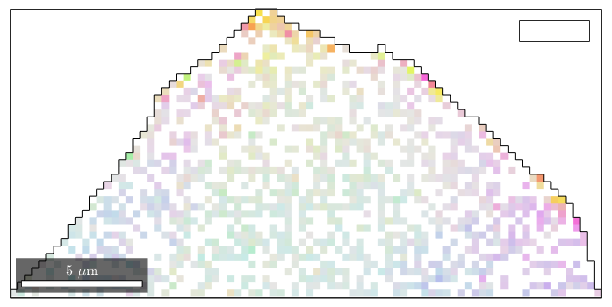
By default all orientations that are set to nan are interpolated.
% interpolate the missing data with the smoothing spline filter ebsdNaN_smoothed = smooth(ebsdNaN,splineFilter); plot(ebsdNaN_smoothed('indexed'),oM.orientation2color(ebsdNaN_smoothed('indexed').orientations)) hold on plot(oneGrain.boundary,'micronbar','off') hold off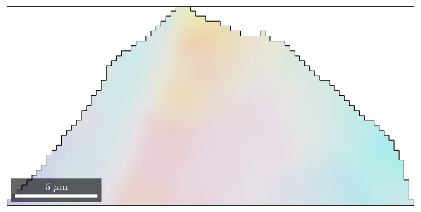
We may plot the misorientation angle between the interpolated orientations and the measured orientations
plot(ebsd_smoothed('indexed'),angle(ebsdNaN_smoothed('indexed').orientations,ebsd_smoothed('indexed').orientations)./degree) mtexColorbar hold on plot(oneGrain.boundary,'micronbar','off') hold off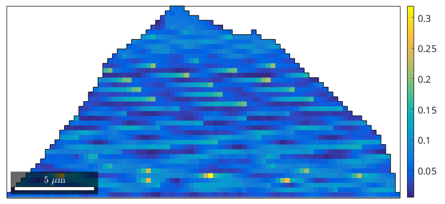
Lets consider a subset of the
close all; plotx2east mtexdata forsterite ebsd = ebsd(inpolygon(ebsd,[10 4 5 3]*10^3)); plot(ebsd('Fo'),ebsd('Fo').orientations) hold on plot(ebsd('En'),ebsd('En').orientations) plot(ebsd('Di'),ebsd('Di').orientations) % compute grains [grains,ebsd.grainId] = calcGrains(ebsd('indexed'),'angle',10*degree); % plot the boundary of all grains plot(grains.boundary,'linewidth',1.5) hold off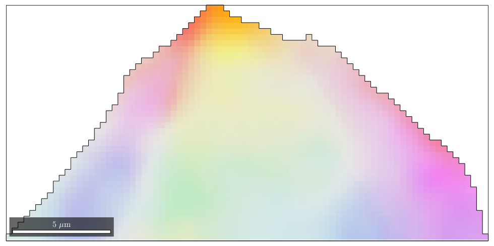
Using the option fill the command smooth fills the holes inside the grains. Note that the notindexed pixels at the grain boundaries kept untouched. In order to allow MTEX to decide wheter a pixel is inside a grain or not the grain variable has to be passed as additional argument.
F = splineFilter; ebsd_smoothed = smooth(ebsd('indexed'),F,'fill',grains); plot(ebsd_smoothed('Fo'),ebsd_smoothed('Fo').orientations) hold on plot(ebsd_smoothed('En'),ebsd_smoothed('En').orientations) plot(ebsd_smoothed('Di'),ebsd_smoothed('Di').orientations) % plot the boundary of all grains plot(grains.boundary,'linewidth',1.5) % stop overide mode hold off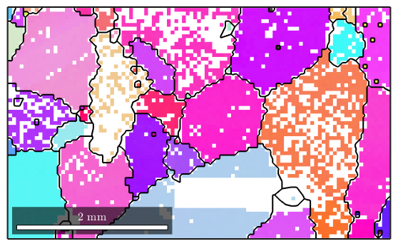
In order to visualize the orientation gradient within the grains we plot the misorientation to the meanorientation. We observe that the mis2mean varies smoothly also within the regions of not indexed orientations.
% compute mis2mean for the interpolated orientations [~,~,ebsd_smoothed.mis2mean] = calcGrains(ebsd_smoothed,'angle',10*degree); % plot mis2mean for all phases oM = ipdfHSVOrientationMapping(ebsd_smoothed('Fo').CS,ebsd_smoothed('Fo').CS); oM.maxAngle = 5*degree; plot(ebsd_smoothed('Fo'),oM.orientation2color(ebsd_smoothed('Fo').mis2mean)) hold on oM = ipdfHSVOrientationMapping(ebsd_smoothed('En').CS,ebsd_smoothed('En').CS); oM.maxAngle = 5*degree; plot(ebsd_smoothed('En'),oM.orientation2color(ebsd_smoothed('En').mis2mean)) oM = ipdfHSVOrientationMapping(ebsd_smoothed('Di').CS,ebsd_smoothed('Di').CS); oM.maxAngle = 5*degree; plot(ebsd_smoothed('Di'),oM.orientation2color(ebsd_smoothed('Di').mis2mean)) % plot boundary plot(grains.boundary,'linewidth',1.5) hold off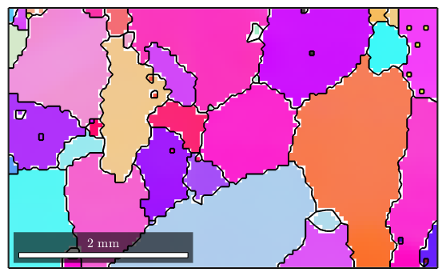
If no grain variable is passed to the smoothing command the not indexed pixels are assigned to the nearest neighbour.
ebsd_smoothed = smooth(ebsd('indexed'),F,'fill'); plot(ebsd_smoothed('Fo'),ebsd_smoothed('Fo').orientations) hold on plot(ebsd_smoothed('En'),ebsd_smoothed('En').orientations) plot(ebsd_smoothed('Di'),ebsd_smoothed('Di').orientations) % plot the boundary of all grains plot(grains.boundary,'linewidth',1.5) % stop overide mode hold off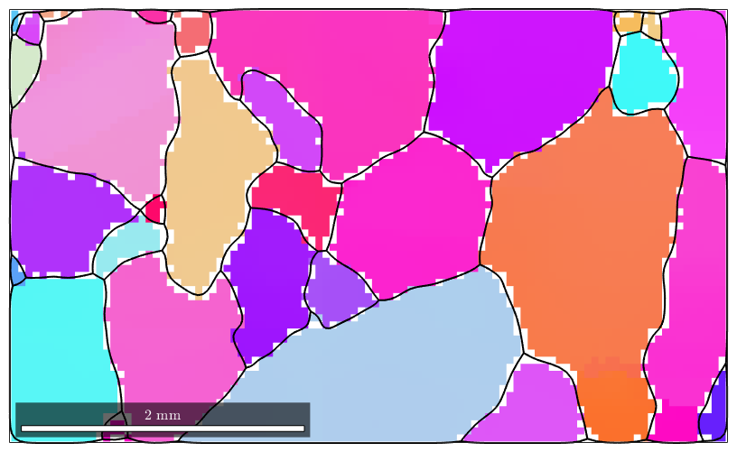
| DocHelp 0.1 beta |